UI audit v2: pixel perfection
All 36 FrameDump states (collapsed, expanded, takeover, settings) were rendered from the real view tree at 2× and measured. Every “before” is a real render. Every “after” is a mockup reflowed from those same pixels using the proposed token values, so it shows exactly what the code change would produce. Measurements are in points (1pt = 2px in the images). v1 marks issues the first audit flagged that are still there.
- P1Panel inset: 9pt sides, 20pt bottomYour report. Affects every tab.
- P1Five different content edgesMedia 0, Agents +3, Calendar +11, Crypto +12pt
- P1Header jumps 2pt entering SettingsGear moves and gains a plate
- P2Settings “Enabled” row is 6pt insetLabel and switch off the column
- P2Watchlist prices drift 17ptPlus placeholder dashes v1
- P2Ten buttons, seven stylesCollapse to three tiers
- P2Approval card alignmentMascot, title line, button heights
- P2Empty media: dead scrubberMismatched link arrows v1
- P3Paused placeholder is a fake play buttonUse the record
- P3Source badge sits on the art cornerArt bleeds around it
- P3Tree glyph floats above the baselineSubagent icons off column
- P3Settings: orphan “Off”, dim labelsGeneral section
- P3Collapsed shoulders: 4 different insets4 / 6 / 7 / 7pt
- P3Artwork jumps 1pt opening lyricsMedia
- P3Agents overflow can't be verifiedTooling gap
P11 · The panel's inset is 9pt at the sides and 20pt at the bottom
This is the one you spotted. The disc is centred correctly inside its tile. What's wrong is the tile: it sits 9pt from the side and 20pt from the bottom. On top of that, its 6pt corner isn't concentric with the panel's 24pt corner, so the gap squeezes to about 5pt on the diagonal. The eye reads both as “off-centre”. The same mismatched inset frames every tab; it's just most visible where a solid block sits in the corner.
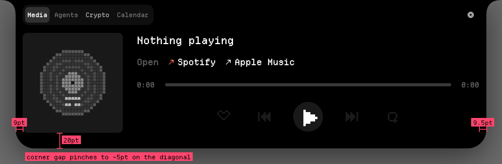
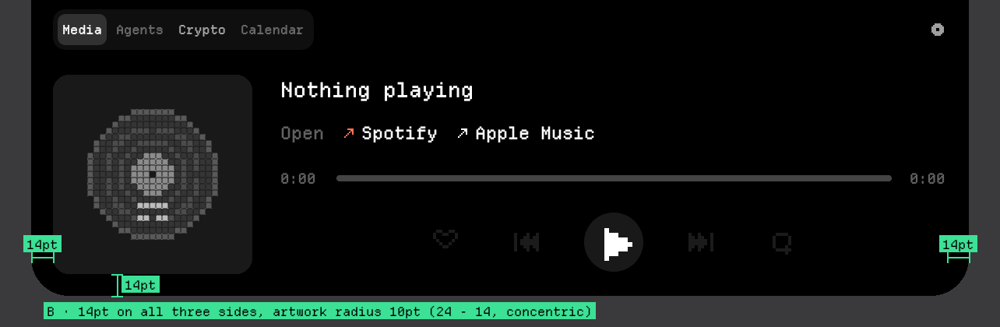
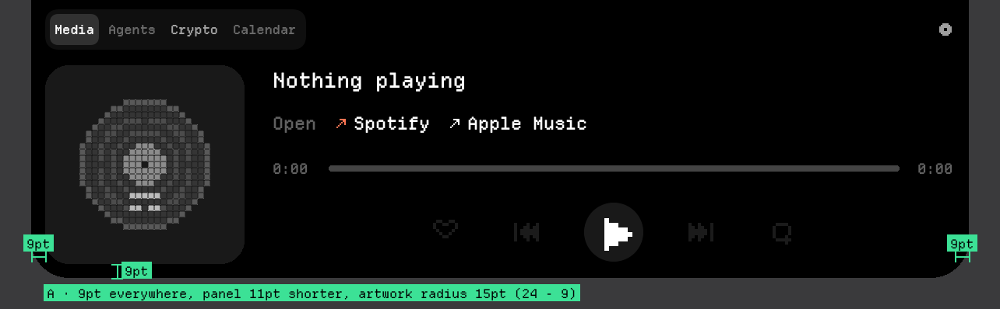
Fix: one panel inset token, and inner radii derived from it.
- Theme.swift:454–481: replace
expandedHorizontalPadding,expandedVerticalPaddingandexpandedBottomContentInset, which add up differently, with oneMetrics.panelInset = 14used for left, right and bottom. Top stays as is, because the tab bar has to clear the shoulders. - Add
Metrics.nestedRadius(for inset:)=expandedBottomCornerRadius − insetand use it for the artwork (Media.artworkCornerRadius6 → 10) and for any block that touches the bottom edge. - Panel height stays 190pt; the artwork drops 6pt, and the 16pt gap under the tab bar is still enough.
P12 · Every tab starts its content at a different x
Switching tabs makes the content slide sideways. The tab bar is at the panel inset, but the content starts at +0 (Media, Settings), +3pt (Agents mascot), +11pt (Calendar text) and +12pt (Crypto). Calendar and Trading each add their own contentInset on top of the shared padding.
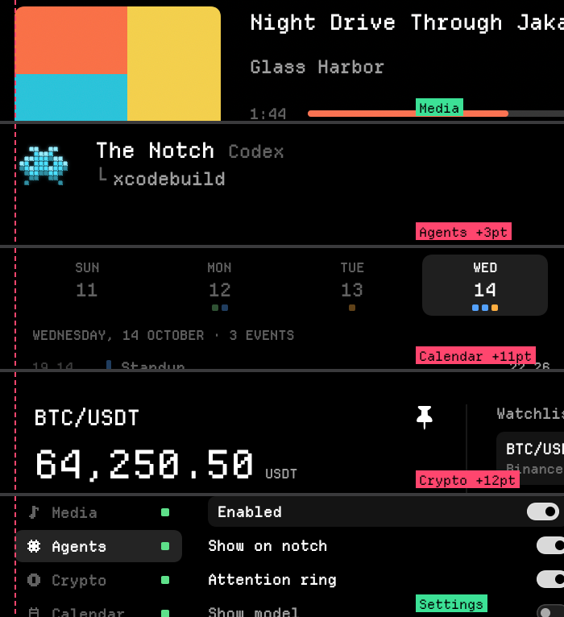
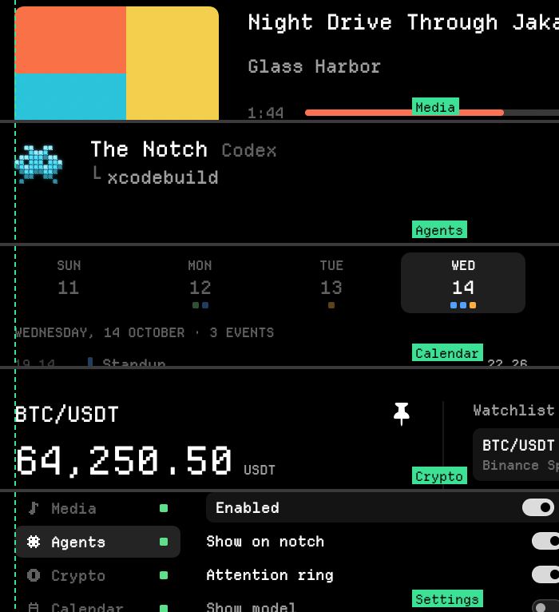
- Remove
Trading.contentInset(Theme.swift:420, used at TradingExpandedView.swift:29) and the Calendar list's extra inset (Theme.swift:380); filled rows bleed outward with negative padding instead, so text lines up and highlights extend past it. - Agents: the 3pt comes from the mascot's frame being wider than its sprite. Pin the sprite to the leading edge.
- Hardcoded paddings break the Theme rule: TradingExpandedView.swift:102, 124, 205 (
6,5) and AgentsExpandedView.swift:121 (8). Move them intoTheme.Metrics.
P13 · The header jumps when you enter Settings
On the tabs, the gear's centre is at y=19pt. In Settings, the whole header row is 2pt higher (17pt), the gear gets a filled plate, and the tab track is swapped for “Restore Defaults” at a different height. The one control you just pressed is the one that moves.
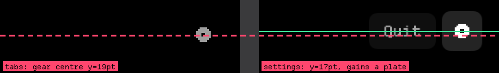
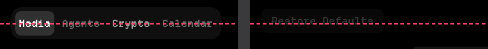
- NotchHeaderControls: give both header states one fixed row height (
TabBar.trackHeight) and centre everything on it. Restore Defaults and Quit use that height. - Show the gear's “selected” plate as a fill that fades in place, with no change to the gear's frame.
P24 · Settings master row pulls its label and switch inward
The “Enabled” row's highlight is drawn by padding the row 6pt inside itself (masterHorizontalPadding, SettingsExpandedView.swift:299). So its label starts 6pt right of the rows below, and its switch ends 6pt left of theirs.
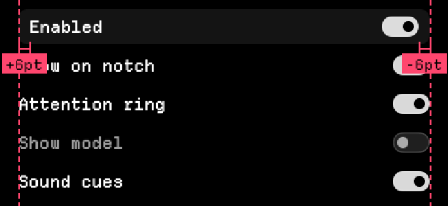
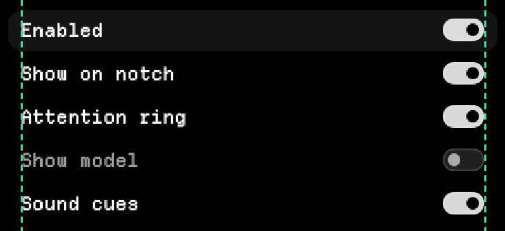
- Keep the row's content frame. Draw the plate with
.background { RoundedRectangle(...).padding(.horizontal, -masterHorizontalPadding) }so it sits outside the content instead of pushing it in.
P25 · Watchlist prices don't share a column v1
Only the pinned row reserves a slot for the pin, so BTC's price ends 17pt left of ETH's. The change line is a bare “–” everywhere (hero and both rows), and the “Binance live” dot is grey even while live.
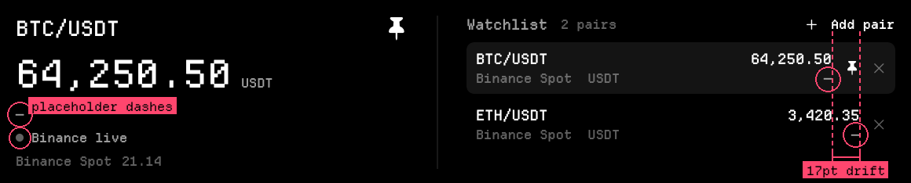
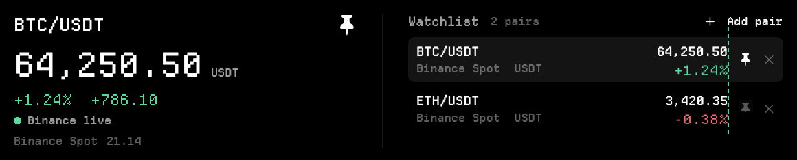
- Every row reserves the pin slot (
Trading.pinSlotWidth). Unpinned rows show the pin at tertiary opacity, which also makes “pin this” discoverable. - Hide the change line until a 24h change has arrived; don't fill it with a dash. Use the
up/downcolours. - Live dot:
Theme.Colors.upwhen the stream is connected, tertiary when stale.
P26 · Ten buttons, seven styles
Heights range from 14pt to 22pt, there are three corner radii, outlined and filled versions of the same role, and two font sizes. “Dismiss” is larger and heavier than “Answer in Claude Code”, which inverts their importance.
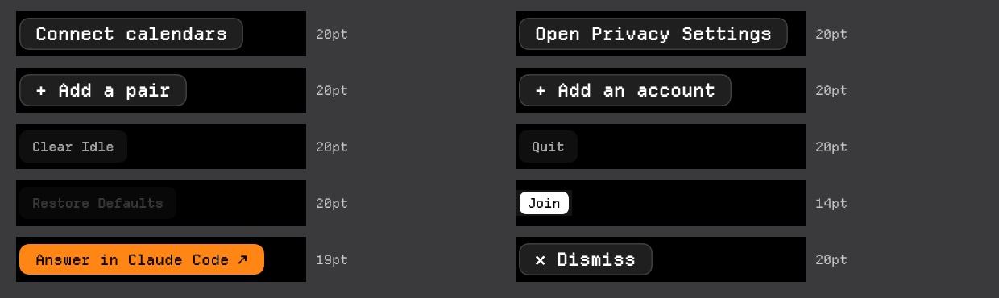
Theme.Text.bodyNotchButtonStylegets.primary / .secondary / .tertiary×.regular / .small. Every surface picks from that grid, and nothing else sets a button background.- Primary = the one action that resolves the surface (Answer, Join). Secondary = everything else that's a button. Tertiary = links in rows.
- Sentence case throughout (“Clear idle”, “Restore defaults”), matching the rest of the copy.
P27 · Approval card: three alignment breaks
The mascot starts 5pt above the accent bar and touches the panel's top edge. The tool title (“Bash”) sits on neither the eyebrow's line nor the bar's top. The left column is about 158pt wide for 80pt of text, leaving a dead strip before the command. The buttons differ in height (19 vs 20pt) and weight.
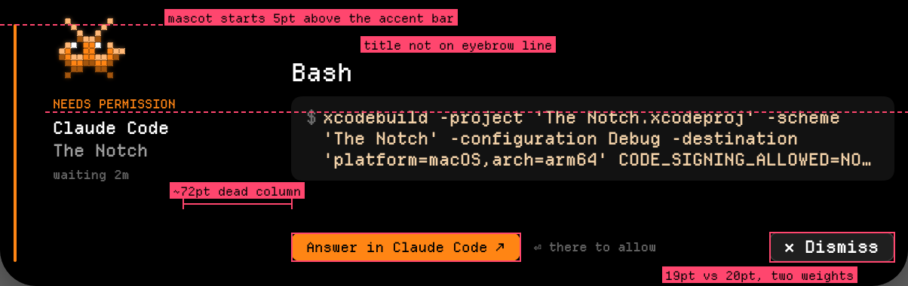
- Make the bar's top the card's top: mascot top = bar top, and the title's cap height lines up with the mascot's top.
- Size the left column to its content (
fixedSize) with a max, and give the freed space to the command block. - Buttons from #6: Answer = primary regular, Dismiss = secondary regular, so they're the same height.
P28 · Empty media still shows a dead 0:00 scrubber v1
With nothing playing, the panel shows a 0:00 / 0:00 track that can't be scrubbed, and the two “open” links use different arrow colours (Spotify orange, Apple Music white).
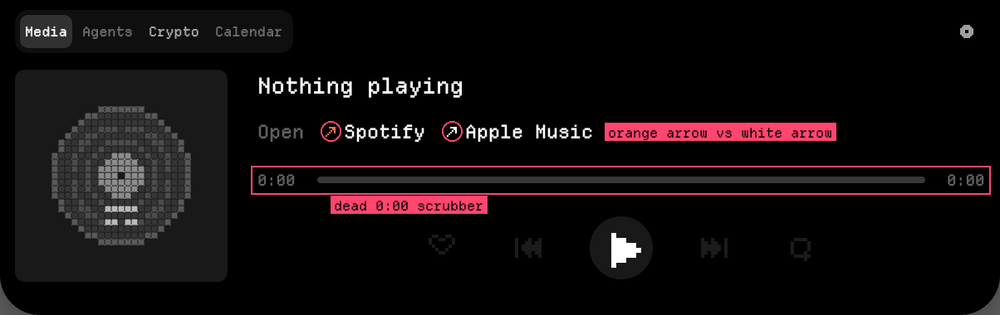
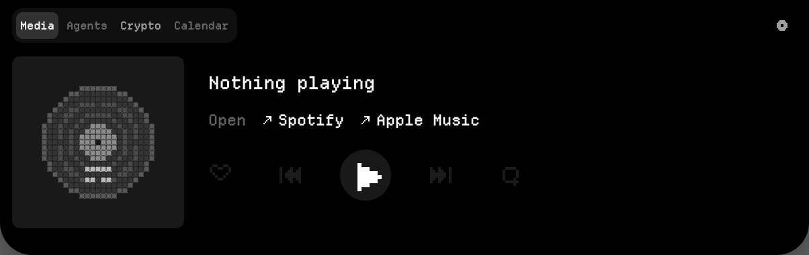
- MediaExpandedView: show the progress row only when
duration > 0; centre the metadata column against the artwork in the empty state. Link arrows use one colour (secondary).
P39 · The paused placeholder looks like a second play button
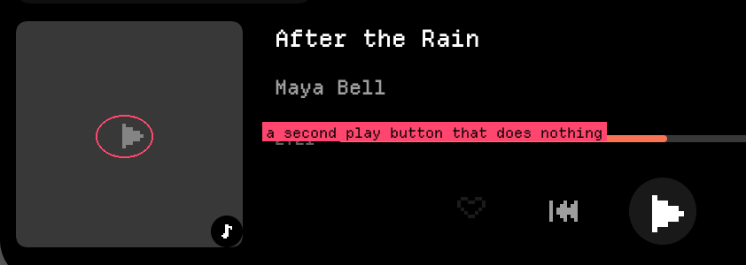
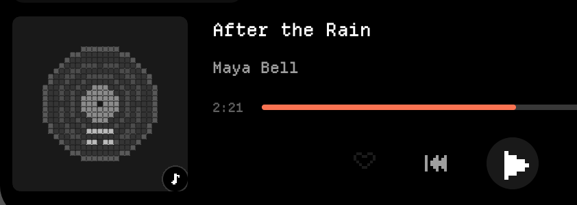
P310 · The source badge sits exactly on the artwork's corner
The badge's circle and the tile's rounded corner meet at the same point, so a sliver of artwork shows in the corner around the badge. It reads as a clipping error.
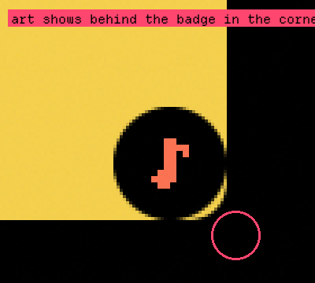
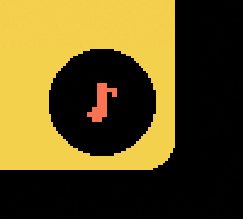
P311 · Tree glyph “└” floats above the text baseline
The connector glyph sits a few points high on every detail line. The subagent sprites start 3.5pt left of the title column they belong to.
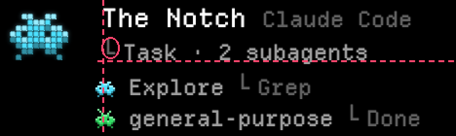
- Draw the connector as a 1px
Path(vertical to the x-height, then horizontal) instead of the font's box-drawing glyph, whose metrics vary. Align the subagent rows on the title's leading edge.
P312 · Settings › General: orphan “Off” and labels that look disabled
“Off” is the media-keys permission status rendered as a link label, with no subject. Rows with a value picker (HUD dwell, Hover speed, Keep done, Players) always dim their label, so they look disabled next to enabled toggles.
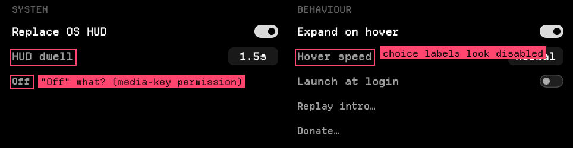
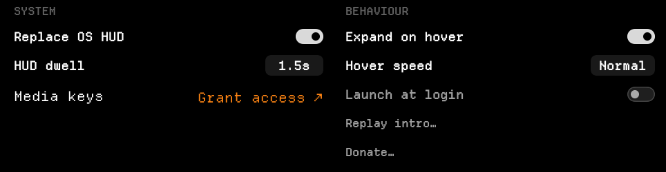
- SettingsExpandedView.swift:255:
SettingsLinkRow(label: mediaKeys.status.rawValue)becomes a labelled row: “Media keys” + trailing status/action. Only dim a label when its control is off or inert.
P313 · Collapsed shoulders use four different insets
The leading content sits 6pt (mascot), 4pt (artwork) or 7pt (HUD, crypto) from the housing edge, and the trailing side varies as well. Swapping states shifts the content sideways inside the same silhouette.
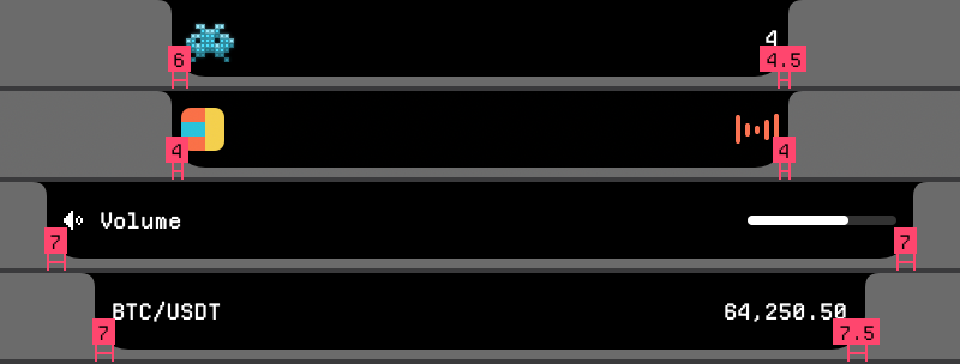
- One
Collapsed.shoulderContentInset(proposed 7pt, matching the artwork's 7pt top and bottom inset in the 32pt band), used by the compact and the wide (HUD/crypto) shoulders alike.
P314 · Artwork jumps 1pt when lyrics open
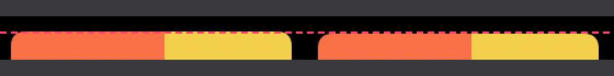
- The lyrics layout centres the artwork in a 1pt taller column. Pin the artwork to the top in both layouts so only the right column changes.
P315 · The overflowing agents list renders blank in FrameDump
Not an app bug: ImageRenderer draws a ScrollView as empty. But it means the overflow state, which is where the row clipping in v1 #1 lived, has no visual regression check.
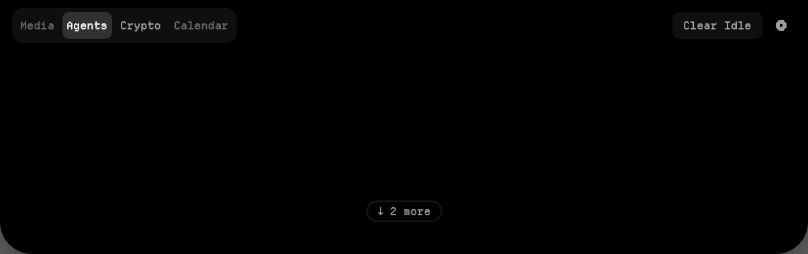
- Under
FrameDump, swap the scroll view forrowsclipped to the viewport with the same mask and pill (adebugRenderStaticenvironment flag), so the overflow state gets a real frame.
Execution plan
| # | Step | Covers | Size |
|---|---|---|---|
| 1 | Geometry tokens: panelInset, nestedRadius, header row height, shoulder inset. Migrate the shell and all surfaces; delete per-surface content insets and hardcoded paddings. | 1, 2, 3, 13, 14 | M |
| 2 | Bleed-style highlights (settings master row, calendar rows, watchlist rows) via one .plate() modifier. | 4, 2 | S |
| 3 | Button style grid in NotchButtonStyle; migrate all ten buttons. | 6, 7 | M |
| 4 | Surface fixes: watchlist pin slot + change line + live dot, empty media, paused placeholder, badge, tree connector, General settings rows, approval column. | 5, 7–12 | M |
| 5 | FrameDump static overflow render; re-run the full dump and diff against this page. Each step lands with its own frames. | 15 | S |